컴퓨터활용능력-1급 (2008-08-03 기출문제)
1과목: 컴퓨터 일반
1. 'A'에게서 받은 전자우편 메시지와 첨부자료들을 그대로 'C'에게 전송하려고 할 때 사용할 수 있는 가장 적절한 기능은?
- 전달(Forward)
- 전체회신(Reply All)
- 회신(Reply)
- 새 메일(New Mail)
(정답률: 87%)

2. 다음 중 일반적으로 RAID(Redundant Array of Inexpensive Disks)를 사용하는 목적으로 볼 수 없는 것은?
- 프로세서와 디스크 드라이브 사이의 속도 차이 개선
- 한 개의 대용량 디스크를 여러 개의 디스크처럼 나누어 관리
- 안정성 향상
- 데이터 복구의 용이성
(정답률: 56%)
3. 다음은 어떠한 기술을 설명한 것인가?
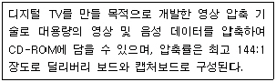
- MPEG
- DIVX
- DVI
- AVI
(정답률: 48%)
4. 한글 윈도우 XP에서 'ipconfig'명령의 기능은?
- 네트워크상에서 해당 IP를 가진 컴퓨터를 검색해준다.
- 현재 컴퓨터의 IP 주소, 서브넷 마스크 및 기본 게이트웨이를 표시한다.
- 네트워크상에 컴퓨터의 연결 유무를 점검한다.
- 윈도우 기동시에 설정된 환경변수를 나타낸다.
(정답률: 67%)
5. 일반 사용자가 컴퓨터의 성능을 구분하려면 CPU에 내장된 명령어에 따라 구분하기도 한다. 다음 중 CISC와 RISC방식에 대한 설명으로 잘못된 것은?
- CISC 방식은 명령어 해석 후 명령어를 실행한다.
- RISC 방식은 명령어가 적으므로 프로그래밍이 쉬운 반면 처리 속도가 느리다.
- CISC 방식의 단점은 명령어가 많으므로 명령어 설계가 어렵다.
- RISC 방식의 단점은 컴파일러 설계가 어렵다.
(정답률: 60%)
6. 새 하드디스크를 구입하여 컴퓨터에 연결한 후 부팅을 하였을 때 하드디스크가 인식되지 않을 경우가 있다. 이 때 사용자가 취할 적절한 행동으로 옳지 않은 것은?
- 점퍼 설정이 잘못되어 있는지 확인한다.
- 하드디스크 포맷을 수행한 후 다시 부팅해 본다.
- 케이블이 제대로 연결되어 있는지 확인한다.
- CMOS 셋업에서 HDD Auto detect 기능을 이용한다.
(정답률: 59%)
7. 다음의 설명과 관련된 것은?
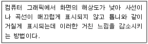
- 디더링(Dithering)
- 렌더링(Rendering)
- 안티엘리어싱(Anti-Aliasing)
- 필터링(Filtering)
(정답률: 79%)
8. 다음 중 컴퓨터의 운영체제에 대한 설명으로 거리가 먼 것은?
- 운영체제는 시스템소프트웨어에서 가장 중요한 요소다.
- 운영체제는 키보드, 모니터, 디스크 드라이브 등 필수적인 주변장치들을 관리하는 BIOS를 포함한다.
- 컴퓨터의 기본적인 동작들을 관리하는 주요 프로그램들을 슈퍼바이저(supervisor)라고 부른다.
- 운영체제 프로그램은 컴퓨터가 동작하는 동안 하드디스크에 위치하여 여러 종류의 자원관리 서비스를 제공한다.
(정답률: 45%)
9. 다음 중 컴퓨터의 USB 방식 주변기기에 대한 설명으로 옳지 않은 것은?
- 빠른 전송 속도를 지원하며 모드에 따라 100Mbps, 200Mbps, 400Mbps 등이 있다.
- USB는 플러그&플레이(Plug&Play) 기능을 지원한다.
- 핫 플러깅(Hot Plugging) 기능으로 컴퓨터에 전원이 켜져 있는 상태에서도 USB 주변기기들을 빼거나 연결할 수 있다.
- 1.5Mbps의 저속 모드 USB는 HID(Human Interface Device)에서 사용하는데 키보드나 마우스가 이에 속한다.
(정답률: 44%)
10. 다음 중 사용자의 정보나 패스워드를 찾아내기 위한 해킹기법이 아닌 것은?
- Spoofing
- Sniffing
- Phishing
- Key Logger
(정답률: 41%)
11. 다음 중 Window의 인쇄 기능에 대한 설명 중 가장 올바른 것은?
- 인쇄 작업에 오류가 표시되어 해당 문서가 인쇄 대기열에 대기하면 뒤의 인쇄 작업이 진행된다.
- 현재 인쇄 중인 문서를 다른 프린터로 전송할 수 있다.
- 인쇄 작업이 지정된 프린터가 오프라인 상태이거나 용지 걸림 상태이면 오류가 발생한 문서를 새 포트로 보낼 수 있다.
- 프린터의 인쇄 작업이 실패하고 문서가 인쇄 대기열에서 정지되어 있을 때 다른 프린터로 문서를 보낼 수 있다.
(정답률: 51%)
12. 다음 중 TCP/IP에 대한 설명으로 옳지 않은 것은?
- 인터넷 연결을 위한 프로토콜이다.
- TCP는 두 종단 간 연결을 설정 한 후 데이터를 패킷 단위로 교환하게 된다.
- IP는 발신지 호스트로부터 목적지 호스트까지 데이터 전송이 될 수 있도록 라우팅, 오류보고, 상황보고 등의 기능을 수행한다.
- IPv6는 IPv4의 한계로 인해 출현하였다.
(정답률: 64%)
13. 다음의 설명과 관련된 것은?
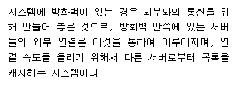
- Web Server
- Proxy Server
- Client Server
- FTP Server
(정답률: 75%)
14. 다음 중 윈도우 XP에서 특정 웹사이트로부터의 접속 과정과 라우팅 경로를 추적하여 보여주는 프로그램의 명령어와 사용방법이 올바른 것은?
- trace 211.31.119.151
- trace yahoo.co.kr
- tracert ksy@hanmir.com
- tracert 211.31.119.151
(정답률: 67%)
15. 다음의 설명과 관련된 인터넷 서비스는?
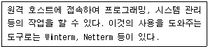
- Telnet
- Gopher
- FTP
- WAIS
(정답률: 61%)
16. 다음은 한글 Windows에서 사용자 계정의 암호에 대한 설명으로 틀린 것은?
- 사용자 계정 이름에 암호를 할당하면 사용자 지정 설정, 컴퓨터 프로그램, 시스템 리소스가 보다 안전하다.
- 윈도우 시스템에서는 시스템 부팅시 매번 수동으로만 암호를 입력하여야 하는 불편함이 있다.
- 암호 힌트를 지정할 수 있지만, 그 힌트는 컴퓨터를 사용하는 모든 사용자가 볼 수 있다.
- [제어판]에서 [사용자계정]을 선택하여 새로운 암호를 지정하거나 변경할 수 있다.
(정답률: 53%)
17. 다음 중 윈도우의 폴더 옵션에서 설정하는 ‘오프라인 파일’에 대한 설명으로 가장 옳지 않은 것은?(문제오류로 실제 시험에서는 모두 정답 처리 되었습니다. 시험범위를 벗어났기 때문입니다. 여기서는 3번을 정답 처리 합니다.)
- 바탕화면에 오프라인 파일 폴더에 대한 바로 가기를 만들 수 있다.
- 네트워크에 연결되어 있지 않을 때에도 네트워크에 있는 파일 및 프로그램으로 작업할 수 있도록 설정한다.
- 로그온 방식이 ‘빠른 사용자 전환’인 경우에 오프라인 파일 기능을 사용할 수 있다.
- 로그오프하기 전에 모든 오프라인 파일을 동기화하도록 설정할 수 있다.
(정답률: 82%)
18. 다음 중 가전제품, PDA등에 사용되는 임베디드 운영체제로 가장 적절한 것은?
- 윈도우CE
- Java
- IIS(Internet Information Server)
- MS-DOS
(정답률: 37%)
19. 다음 중 시스템 구성 편집기(Sysedit)로 편집할 수 없는 파일은 어느 것인가?
- win.ini
- config.sys
- admin.dll
- autoexec.bat
(정답률: 49%)
20. 다음 중 Windows XP의 시작 메뉴에 대한 설명으로 옳지 않은 것은?
- 시작 메뉴의 단축키는 [Alt]+[Esc]
- 시작 메뉴의 프로그램 목록은 고정된 항목 목록과 자주 사용하는 프로그램 목록 두 부분으로 나뉜다.
- 시작 메뉴의 경계선 위에 있는 영역에 고정된 항목 목록으로 프로그램을 표시되기 위해서는 표시할 프로그램을 마우스 오른쪽 단추로 클릭하고, ‘시작 메뉴에 고정’을 클릭한다.
- 자주 사용하는 프로그램 목록에 표시되는 프로그램의 기본 개수는 변경할 수 있다.
(정답률: 60%)
2과목: 스프레드시트 일반
21. 다음 중 WorkSheets 개체의 주요 속성과 메서드에 대한 설명으로 옳지 않은 것은?
- Protect: 워크시트를 수정하지 못하도록 한다.
- Range: 워크시트에서 셀이나 셀 범위를 나타낸다.
- Activate: 워크시트의 표시 여부를 나타낸다.
- EntireRow: 지정한 범위에 들어 있는 행 전체를 나타낸다.
(정답률: 56%)
22. [A1]셀에 =SUMPRODUCT({1,2,3},{5,6,7})을 입력하고 <Enter>키를 눌렀을 때 수식의 결과 값으로 옳은 것은?
- 24
- #VALUE!
- 32
- 38
(정답률: 50%)
23. 다음 중 부분합에 관한 설명 중 옳지 않은 것은?
- 부분합은 실행하기 전에 계산하고자 하는 그룹을 기준으로 정렬되어 있어야 올바른 결과를 얻을 수 있다.
- 특정한 영역에 대하여만 부분합을 실행할 때는 해당 영역을 셀 범위로 설정하면 된다.
- 부분합 작성 후 윤곽 기호를 눌러 특정한 데이터가 표시된 상태에서 차트를 작성하면 모든 데이터가 차트에 표시된다.
- 부분합의 그룹은 합계, 평균, 최대값, 최소값 등의 함수 계산을 할 수 있다.
(정답률: 60%)
24. 아래 그림에서 상환금액(월)[B5]은 대출금[B2], 연이율[B3], 상환기간(개월)[B4]에 대한 계산 결과이다. 월 상환금액을 80,000원으로 하면, 상환기간(개월)을 얼마나 감소/증가시킬 수 있는가를 알아보고자 한다. 목표값 찾기 대화상자의 수식 셀, 찾는 값, 값을 바꿀 셀에 들어갈 내용이 맞게 짝지어진 것은?
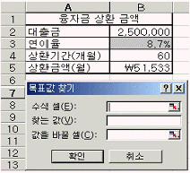
- $B$5, 80000, $B$4
- B4, 80000, B5
- $B$5, 80000, $B$3
- B3, 80000, B5
(정답률: 57%)
25. 다음 그림의 [B2:F2]셀의 제목을 매 페이지마다 인쇄하고자 한다. 설정 방법으로 옳은 것은?
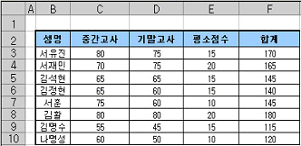
- [파일]-[페이지설정]-‘시트’탭에서 ‘인쇄 영역’에 범위를 지정한다.
- [파일]-[페이지설정]-‘머리글/바닥글’탭에서 ‘머리글’에서 범위를 지정한다.
- [파일]-[페이지설정]-‘시트’탭에서 인쇄 제목의 ‘반복할 행’에서 범위를 지정한다.
- [파일]-[페이지설정]-‘머리글/바닥글’탭에서 ‘인쇄 영역’에 범위를 지정한다.
(정답률: 55%)
26. 다음 중 오류값 ‘#VALUE!'가 발생하는 원인으로 올바른 것은?
- 잘못된 인수나 피연산자를 사용했을 경우
- 수식에서 값을 0으로 나누려고 할 경우
- 함수나 수식에 사용할 수 없는 값을 지정했을 경우
- 셀 참조가 유효하지 않을 때
(정답률: 47%)
27. 매 페이지에 ‘컴퓨터활용’과 오늘 날짜를 삽입하여 머리글을 인쇄하려고 한다. 다음 중 [머리글 편집(C)]의 입력 설정으로 옳은 것은?
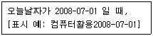
- “컴퓨터활용”&[날짜]
- 컴퓨터활용&[날짜]
- 컴퓨터활용*[DATE]
- 컴퓨터활용&[DATE]
(정답률: 29%)
28. 다음 중 아래의 워크시트를 이용한 수식에 대해서 그 결과가 옳지 않은 것은?
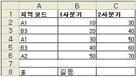
- 수식 : =CONCATENATE(A8,B8) 결과 : 홍길동
- 수식 : =DCOUNTA($A$1:$C$6,1,A1:A2) 결과 : 2
- 수식 : =INDEX(A2:C6,2,3) 결과 : 40
- 수식 : =OFFSET(A2,2,2) 결과 : 20
(정답률: 45%)
29. 작성한 차트를 다음과 같이 단독의 창(윈도우)으로 띄우는 방법으로 옳은 것은?(제외된 문제, 문제 출제당시 오피스 2003 기준으로 출제되어 현재는 제외된 문제 입니다. 참고만 하세요.)
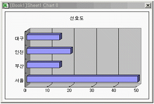
- 차트를 선택한 후 [삽입]-[차트 창]을 선택한다.
- 차트를 선택한 후 [보기]-[차트 창]을 선택한다.
- 차트를 선택한 후 [삽입]-[윈도우 창]을 선택한다.
- 차트를 선택한 후 [보기]-[윈도우 창]을 선택한다.
(정답률: 31%)
30. 다음 ‘3차원 보기’대화상자에 대한 설명으로 옳은 것은?
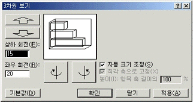
- ‘자동 크기 조정’을 해제하면 항목 축 길이에 대한 비율을 적용한 높이를 변경할 수 있다.
- [기본값] 단추를 누르면 ‘상하 회전’과 ‘좌우 회전’값이 각각 0으로 자동 입력된다.
- ‘상하 회전’, ‘좌우 회전’란에 값을 입력할 수 없으며, 상하좌우 회전 단추를 통해서만 회전이 가능하다.
- 3차원 차트를 선택한 후 단축메뉴의 [차트 옵션]을 클릭하고 [3차원 보기]탭을 선택하면 나타난다.
(정답률: 34%)
31. 다음 중 아래의 피벗테이블에 대한 설명으로 옳지 않은 것은?
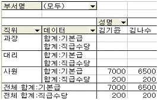
- 페이지 필드는 ‘부서명’이다.
- 행 필드는 ‘직위’이다.
- 김기윤은 ‘사원’이며 기본급이 7000이고 직급수당이 200이다.
- 데이터 필드는 ‘성명’이다.
(정답률: 60%)
32. 현재 작업하고 있는 통합 문서의 ‘Sheet1’시트에서 ‘Sheet3’시트까지 [A1] 셀의 합을 구하고자 할 때 옳은 주소 참조 방법은?
- =SUM(Sheet1!A1:Sheet3!A1)
- =SUM(Sheet1:Sheet3!A1)
- =SUM(Sheet1A1;Sheet2!A1;Sheet3!A1)
- =SUM(Sheet1!A1,Sheet3!A1)
(정답률: 42%)
33. 다음은 For문을 이용하여 1에서 100까지의 합을 구한 후 결과를 메시지 상자에 표시하기 위한 TEST프로시저를 작성한 것으로, 괄호 안에 들어갈 내용을 순서대로 올바르게 나열한 것은?
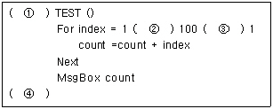
- Sub - To - Step - End Sub
- Property - Start - Stop - End Property
- Property - Start - Step - End Property
- Sub - Start - Stop - End Sub
(정답률: 55%)
34. 다음 중 입력한 데이터에 지정된 표시형식에 따른 결과가 옳은 것은?
- 입력자료 : 24678
표시형식 : #.##
결 과 : 24678 - 입력자료 : 20⑤-04-⑤
표시형식 : mm-dd
결 과 : Apr-04 - 입력자료 : 14500
표시형식 : [DBNum2]G/표준
결 과 : 壹萬四阡伍百 - 입력자료 : 0.457
표시형식 : 0%
결 과 : 45.7%
(정답률: 46%)
35. 다음 중 서식 파일(템플릿)에 대한 설명으로 잘못된 것은?
- 서식 파일의 확장자는 .xlt이다.
- 통합문서의 기본 서식 파일을 만들려면 XLStart 폴더에 파일명을 Book으로 저장한다.
- 모든 새 시트에 나타낼 서식, 스타일, 텍스트, 기타 정보 등을 서식 파일로 작성하는 파일에 넣는다.
- 새 통합 문서에서 보호되거나 숨긴 영역을 서식 파일에 넣을 수 없다.
(정답률: 47%)
36. 다음 매크로 프로그램 코드 중 통합문서 'Book1.xls'의 'Sheet1' 워크시트에서 'A1'셀을 지정할 경우 표현이 올바른 것은?
- Workbooks("Book1").Worksheets("Sheet1").Range("A1")
- Workbooks("Book1").Worksheets("Sheet1").Cells(A,1)
- Workbooks("Book1"),Worksheets("Sheet1"),Range("A1")
- Workbooks("Book1").Worksheets("Sheet1").columns(1)
(정답률: 44%)
37. 다음과 같은 [매크로] 대화 상자를 불러오는 단축키로 올바른 것은?
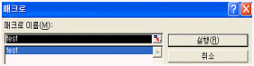
- <Ctrl> + <F8>
- <Ctrl> + <F9>
- <Alt> + <F8>
- <Alt> + <F9>
(정답률: 41%)
38. [C2:C9] 영역의 데이터를 이용하여 지점별 총불입액을 [G4:G7] 영역에 계산하려고 한다. [G4]셀에 수식을 작성한 뒤 [G5:G7]영역에 복사하고 셀 포인터를 [G4]에 위치시켰을 때 수식입력줄에 나타나는 배열수식으로 옳은 것은?
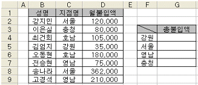
- {=SUM(IF($C$2:$C$9=$F4,$D$2:$D$9,0))}
- =SUMIF($C$2:$C$9=$F4,$D$2:$D$9,1))
- =SUM(IF($C$2:$C$9=$F4,$D$2:$D$9,0))
- {=SUM(IF($C$2:$C$9=$F4,$D$2:$D$9,1))}
(정답률: 44%)
39. 다음 중 조건부 서식에 대한 설명으로 옳지 않은 것은?(엑셀 2003 기준 문제 입니다. 엑셀 2007에서의 답과는 다릅니다. 참고 하시기 바랍니다.)
- 조건을 셀 값 또는 수식으로 입력할 수 있으며, 수식으로 입력할 경우 수식 앞에는 등호(=)를 입력한다.
- 지정한 조건이 어느 것도 참이 아닐 경우 셀은 마지막 참 조건의 서식이 적용된다.
- 지정한 여러 조건 중에서 참인 조건이 여러 개이면 첫째 참 조건의 서식만 적용된다.
- 다른 조건을 추가하려면 [추가]를 누르고 지정하며, 3개까지 지정할 수 있다.
(정답률: 38%)
40. 다음 워크시트에서 지급액[B2:B5]을 현재의 값에 추가지급분 [D2]셀의 값을 더한 값으로 변경하고자 할 때 필요한 기능을 순서대로 올바르게 나열한 것은?
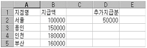
- [편집]-[복사], [편집]-[선택하여 붙여넣기]
- [편집]-[복사], [편집]-[붙여넣기]
- [편집]-[잘라내기], [편집]-[붙여넣기]
- [편집]-[채우기], [편집]-[선택하여 붙여넣기]
(정답률: 57%)
3과목: 데이터베이스 일반
41. 다음 중 하위 폼에 대한 설명으로 옳지 않은 것은?
- 기본 폼과 하위 폼을 연결할 필드의 데이터 형식은 같거나 호환되어야 한다.
- 하위 폼이란 특정한 폼 내에 들어 있는 또 하나의 폼을 말하는 것이다.
- 두 개 이상의 연결 필드를 지정할 때는 필드 이름을 세미콜론(;)으로 구분하여야 한다.
- 기본 폼 내에 포함시킬 수 있는 하위 폼의 개수는 최대 7개까지만 포함시킬 수 있다.
(정답률: 53%)
42. 하위 폼은 주로 ‘일 대 다’관계가 설정되어 있는 테이블을 효과적으로 표시하기 위해 사용된다. 이 때 하위 폼은 어느 쪽 테이블을 원본으로 하는 것이 가장 적절한가?
- ‘일’쪽 테이블
- ‘다’쪽 테이블
- ‘일’쪽 테이블과 ‘다’쪽 테이블을 모두 보여주는 쿼리
- ‘일’쪽 테이블로부터 만든 쿼리
(정답률: 56%)
43. 보고서에 들어있는 정보를 여러 개의 구역으로 나눌 수 있다. 보고서의 구역에 대한 다음 설명 중 옳지 않은 것은?
- 보고서 머리글 : 보고서 시작 부분에 제목, 날짜 또는 보고서 소개 등의 정보를 표시
- 본문 : 주로 표시할 데이터를 지정하며, 인쇄나 미리보기를 할 때 반복적으로 나타난다.
- 그룹 바닥글 : 페이지 번호, 날짜 및 합계 등 매 페이지의 아래쪽에 표시할 정보
- 페이지 머리글 : 보고서에서 모든 페이지의 위쪽에 제목, 열 머리글, 날짜 또는 페이지 번호를 표시하는데 사용
(정답률: 56%)
44. 다음의 설명에 해당하는 Recordset 개체의 메소드로 가장 옳은 것은?
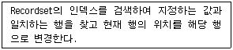
- Find
- Trace
- Search
- Seek
(정답률: 47%)
45. 다음 보기의 매크로 함수 중 성격이 다른 하나는?
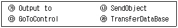
- ㉮
- ㉯
- ㉰
- ㉱
(정답률: 43%)
46. 영어반 테이블과 논술반 테이블의 학번, 이름, 전화번호 데이터를 통합하여 하나의 레코드셋으로 나타나도록 검색하려 한다. 다음 중 알맞은 질의문은?
- Select 학번, 이름, 전화번호 From 영어반, 논술반, Where 영어반.학번=논술반.학번;
- Select 학번, 이름, 전화번호 From 영어반 JOIN Select 학번, 이름, 전화번호 From 논술반;
- Select 학번, 이름, 전화번호 From 영어반 OR Select 학번, 이름, 전화번호 From 논술반;
- Select 학번, 이름, 전화번호 From 영어반 UNION Select 학번, 이름, 전화번호 From 논술반;
(정답률: 54%)
47. 다음 중 컨트롤의 주요 속성에 대한 설명으로 옳지 않은 것은?
- BoundColumn : 콤보 상자나 목록 상자에서 한 번에 여러 항목을 선택할 수 있는지 여부와 선택 방법을 지정한다.
- RowSource : 콤보 상자나 목록 상자에서 목록으로 제공할 데이터를 지정한다.
- DefaultValue : 새 레코드가 만들어질 때 기본으로 입력될 값을 지정한다.
- Caption : 레이블이나 명령 단추 컨트롤에 표시되는 텍스트를 지정한다.
(정답률: 33%)
48. 다음 중 액세스에서 작성할 수 있는 보고서의 종류가 아닌 것은?
- 컬럼 형식 보고서
- 차트
- 탭 형식 보고서
- 플로우차트
(정답률: 48%)
49. 교과목 테이블에서 다음과 같은 SQL문을 실행했을 때, 결과에 나타나는 레코드는 몇 개인가?
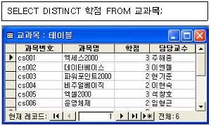
- 6개
- 3개
- 2개
- 1개
(정답률: 56%)
50. 다음 중 액세스에서 테이블을 디자인 할 때 사용되는 조회 속성에 대한 설명으로 가장 옳지 않은 것은?
- 조회 속성은 데이터 형식이 텍스트, 숫자, 예/아니오인 경우에만 사용한다.
- 콤보 상자나 목록 상자 등의 컨트롤을 사용할 수 있다.
- 조회 속성을 이용하면 목록 중에서 선택하여 데이터를 입력할 수 있다.
- 콤보 상자나 목록 상자의 목록 값을 직접 입력하여 지정하려면 행 원본형식을 필드목록으로 선택해야 한다.
(정답률: 32%)
51. 다음 중 액세스에서 테이블로 가져오거나 연결할 수 있는 파일 형식으로 가장 적절하지 않은 것은?
- HTML 문서
- Paradox 문서
- 텍스트 파일 문서
- 파워포인트 문서
(정답률: 57%)
52. 다음 중 테이블의 필드와 레코드 삭제에 대한 설명으로 옳은 것은?
- 필드를 삭제한 후 즉시 'Ctrl+Z'를 실행하면 되살릴 수 있다.
- 데이터시트 보기 상태에서는 필드를 삭제할 수 없다.
- 데이터시트 보기 상태에서는 레코드를 삭제할 수 없다.
- 필드를 삭제하면 필드에 입력된 모든 데이터도 함께 지워진다.
(정답률: 43%)
53. 다음 중 두 테이블간의 관계를 다음과 같이 설정하였을 경우에 대한 설명으로 옳은 것은?
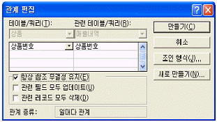
- <상품> 테이블의 상품번호 필드 값이 바뀔 때마다 <매출내역> 테이블의 <상품번호> 필드 값이 자동으로 변경된다.
- <매출내역> 테이블의 상품번호 필드에는 <상품> 테이블에 존재하지 않는 상품번호를 입력할 수 없다.
- <상품> 테이블의 특정 레코드가 삭제되면 <매출내역> 테이블에서 해당 상품번호를 갖고 있는 레코드가 자동적으로 삭제된다.
- <매출내역> 테이블의 상품번호 필드에는 중복된 데이터를 입력할 수 없다.
(정답률: 46%)
54. 다음 중 폼에 관한 설명으로 틀린 것은?
- 폼은 데이터의 입력, 편집 작업등을 위한 사용자와의 인터페이스로 테이블, 쿼리, SQL문 등을 원본으로 하여 작성한다.
- ‘캡션’속성을 이용하여 폼의 이름을 변경할 수 있다.
- ‘그림’속성을 이용하여 그림을 폼의 배경으로 넣을 수 있다.
- ‘기본보기’속성에는 단일폼, 연속폼, 데이터시트 등이 있다.
(정답률: 39%)
55. 총 페이지 수가 5장인 보고서에서 페이지 번호를 표시하는 컨트롤의 ‘컨트롤 원본’항목에 다음과 같은 식이 입력되어 있다. 2번째 페이지에 대한 페이지 번호 출력 결과로 옳은 것은?
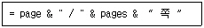
- 2 / 2 쪽
- 5 / 2 쪽
- 2 / 5 쪽
- 5 / 5 쪽
(정답률: 74%)
56. 다음 중 같은 데이터가 여러 파일에 중복되어 있어서 발생하는 문제점에 해당하지 않는 것은?
- 데이터의 일관성 유지가 어렵다.
- 읽기 전용 트랜잭션에 대한 데이터의 가용도가 감소된다.
- 갱신 비용이 많이 든다.
- 데이터의 무결성 유지가 어렵다.
(정답률: 46%)
57. 다음 중 사원(사번, 성명, 근무점수, 부서명) 테이블에서 부서명이 ‘영업부’인 사원들의 근무점수를 15%씩 올리는 SQL문은?
- UPDATE 근무점수 = 근무점수 + 근무점수 * 0.15 FROM 사원 HAVING 부서명 = ‘영업부’;
- UPDATE 사원 SET 근무점수 = 근무점수 * 1.15 WHERE 부서명 = ‘영업부’;
- UPDATE 근무점수 = 근무점수 + 근무점수 * 0.15 FROM 사원 WHERE 부서명 = ‘영업부’;
- UPDATE 사원 SET 근무점수 = 근무점수 * 0.15 HAVING 부서명 = ‘영업부’;
(정답률: 49%)
58. 주어진 성적 테이블에 다음과 같은 SQL문을 실행시킨 결과로 옳은 것은?
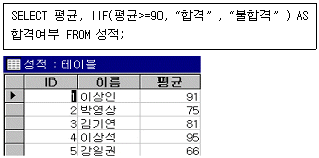
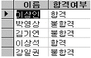
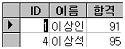
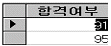
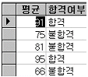
(정답률: 56%)
59. 데이터베이스 매니저(Database Manager)는 데이터베이스내의 하위 단계 데이터와 응용 프로그램 및 시스템에 제기된 질의간의 인터페이스를 제공하는 프로그램 모듈이다. 다음 중 데이터베이스 매니저의 작업이 아닌 것은?
- 무결성 제약 조건의 지정
- 병행 수행(concurrency) 제어
- 예비조치(backup) 및 회복(recovery)
- 비밀 보호 유지
(정답률: 29%)
60. 다음 중 액세스에서 색인(index)에 대한 다음 설명으로 가장 옳지 않는 것은?
- 인덱스 이름을 공통적으로 부여하면 여러 개의 필드를 하나의 인덱스로 구성할 수 있다.
- 메모, 하이퍼링크, OLE개체 데이터 형식 필드는 인덱스를 설정할 수 없다.
- 색인을 설정하면 테이블이 변경될 때 인덱스도 함께 변경되므로 자료의 갱신 속도가 빨라진다.
- 중복불가능(unique) 색인을 설정하면 중복된 자료의 입력을 방지할 수 있다.
(정답률: 52%)